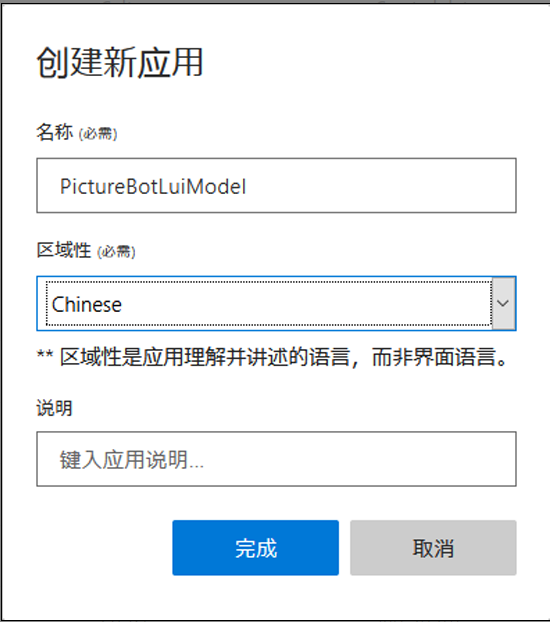
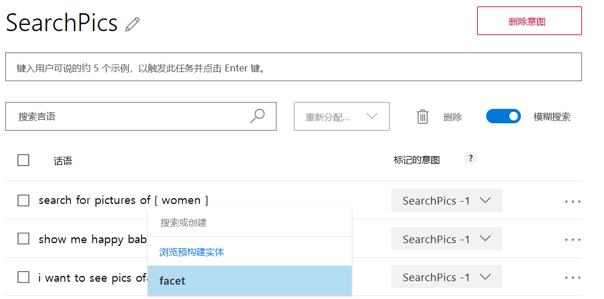
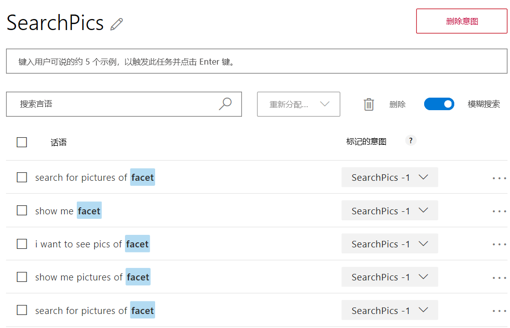

此动手实验将指导你使用 Microsoft 的语言理解智能服务 (LUIS) 创建模型，以改善应用程序的自然语言处理功能。
在本实验中，你将生成、训练和发布 LUIS 模型，以帮助（将在未来的实验中创建）的机器人与人类用户进行有效沟通。
注： 在本实验中，我们将仅创建 LUIS 模型，用于在未来的实验中生成更加智能的机器人。
本研讨会已经介绍了 LUIS 的特性和功能；如需复习 LUIS，请参阅详细信息。
我们现已了解 LUIS 的含义，接着就要规划 LUIS 应用。我们已经创建了一个基本的机器人（“PictureBot”）来响应包含某些文本的消息。我们需要创建可以触发机器人执行不同操作的意图，并创建需要执行不同操作的实体。例如，PictureBot 的意图可能是“OrderPic”，并且它触发机器人提供相应的响应。
例如，在搜索（此处未实现）的情况下，PictureBot 的意图可能是“SearchPics”，它触发 Azure 认知搜索服务查找照片，此操作需要“facet”实体了解要搜索的内容。 可在此处查看更多规划应用的示例。
构思好应用后，我们就可以生成并对其进行训练。
作为回顾，以下是在创建 LUIS 应用程序时通常要采取的步骤：
在门户中创建 LUIS 服务是可选操作。但是，如果要了解如何在门户中创建免费或付费服务，则可以按照下面的步骤操作。
注：如果运行 pre-req ARM 模板，则已有一个包括语言理解 API 的认知服务资源。
打开 Azure 门户
选择 “创建资源”。
在搜索框中输入 “语言理解” 并选择 “语言理解”
选择 “创建”
选择订阅和资源组
在“名称”处，键入“{YOURINIT}luisbot”
在“创作资源”位置处，请选择离你最近的位置。 并非所有位置都适用于该资源。
在“定价层”处选择“免费 F0”
在“预测资源”位置处，设置与资源组位置相同的选项
在“预测定价层”处，选择“免费 F0”
选择“查看 + 创建”，然后选择“创建”
注：Luis AI 网站不允许控制或发布基于 Azure 的认知服务资源。 需要调用 API 来进行训练和发布。
我们来学习如何使用 LUIS 添加一些自然语言功能。使用 LUIS，可以将自然语言（用户在与机器人交谈时可能会用到的单词/短语/句子）映射到意图（用户想要执行的任务或操作）中。就我们的应用程序而言，可能有几个意图，例如：查找图片、共享图片和订购图片打印件。我们可以举几个示例言语作为询问这些内容的方法，并且 LUIS 将根据其学到的内容将其他新的言语映射到每个意图。
警告：虽然 Azure 服务使用 IE 作为默认浏览器，但我们不建议将其用于 LUIS。应该可以在所有实验中使用 Chrome 或 Firefox。或者，也可以下载 Microsoft Edge 或 Google Chrome。
导航至 https://www.luis.ai（除非你位于欧洲或澳大利亚）。我们将创建一个新 LUIS 应用来支持机器人。
注：如果你在 “欧洲” 区域创建了密钥，则需要在 https://eu.luis.ai/ 创建应用程序。如果你在 “澳大利亚” 区域创建了密钥，则必须在 https://au.luis.ai/ 创建你的应用程序。可在此处详细了解 LUIS 发布区域。
使用组织或 Microsoft 帐户进行登录。该帐户应与上一节中用于创建 LUIS 密钥的帐户相同。
选择 “立即创建 LUIS 应用”。应重定向到 LUIS 应用程序的列表。 如果出现提示，请选择 “稍后迁移”。
若是第一次使用，系统会要求你同意服务使用条款并选择你所在的区县。
注意：请注意，当前页面上的“新应用”按钮旁边也有一个“导入应用”。 创建 LUIS 应用程序后，可以将整个应用导出为 JSON 并将其签入源代码管理。 这是建议的最佳做法，因此你可以在编写代码时对 LUIS 模型进行版本控制。 可以使用“导入应用”按钮重新导入导出的 LUIS 应用。 如果跟不上实验室的进度并想走捷径，则可以单击“导入应用”按钮并导入 LUIS 模型。
在主页上选择 “新建应用” 按钮
使用课程实验室中使用的类似约定为应用键入名称。
选择一个区域性和预测资源
选择“完成”。 关闭“如何创建有效的 LUIS 应用”对话框。

在顶部导航中，选择“生成”链接。 请注意，存在名为“None”的意图。 不映射到任何意图的随机言语可能会映射到“None”。
我们希望机器人能够执行以下操作：
让我们为请求实现其中每一项的用户创建意图。
选择“+ 创建”按钮。
将第一个意图命名为 “Greeting”，然后选择 “完成”。
提供几个用户在问候机器人时可能回应的言语示例，并在提供每个示例后按 Enter。
我们来了解一下如何创建实体。 用户请求搜索图片时，他们可以指定要寻找的内容。 让我们在实体中捕获该内容。
在左列中选择 “实体”，然后选择 “+ 创建”。
将实体命名为 “facet”
对于实体类型，请选择 “机器学习”。
选择 “创建”。
选择左侧边栏中的“意向”，然后单击“+ 创建”按钮。
请将意图命名为 “SearchPics”，然后单击 “完成”。
与针对问候语执行的操作一样，让我们添加一些示例言语（用户在与机器人交谈时可能会用到的单词/短语/句子）。 人们可能会通过多种方式搜索图片。 请随意使用下面的一些言语，并添加自己要求机器人搜索图片会使用的措辞。
使用一些言语后，我们必须让 LUIS 了解如何挑选搜索主题作为“facet”实体。“facet”实体选择的所有内容都将被搜索。
请将鼠标悬停在该单词上并单击它（或单击连续单词以选择一组单词），然后选择“facet”实体。

因此，标注 facets 时，言语可能会变成以下内容：

注意：此研讨会不涵盖 Azure 认知搜索，但是，为了演示，此功能已保留。
选择左侧边栏中的 “意图”，并添加另外两个意图：
将其中一个意图命名为 “SharePic”。 可以通过如下言语识别：
创建另一个名为 “OrderPic” 的意图。 可以通过如下言语沟通：
选择言语时，使用问题、命令和“我想…”格式的组合会很有帮助。
最后，请在“None”意图中添加一些示例言语。事情超出应用程序的范围时，使用 LUIS 标签非常有帮助。添加诸如“我饿了，想吃比萨饼”、“搜索视频”等项。None 意图中应有大约 10-15％ 的应用言语。
现在准备训练模型。在本练习中，你将执行一个简单的训练操作以测试你的模型。 测试将使用 LUIS 门户中的内置测试面板进行。
在顶部菜单中，选择 “训练”。在训练过程中，LUIS 建立了一个模型，根据你提供的训练数据将话语映射到意图。
[!提示] 训练并不总是立竿见影。有时还会排队等待，并且可能需要几分钟时间。
培训结束后，选择顶部工具栏中 “管理”。以下选项将出现在左侧工具栏上：
[!备注] 左窗格中的类别可能会随门户的更新而更改。 因此，密钥和终结点可能不同于此处列出的类别。
在顶部工具栏中，选择 “发布”。
[!备注] 你可以发布到你的 “生产” 或 “暂存” 终结点。选择 “生产”，然后了解两个终结点的原因。
在 “选择你的发布位置和设置” 下，选择 “生产槽”，然后选择 “完成”。
发布会创建终结点，以调用 LUIS 模型。终结点 URL 将会显示。复制终结点 URL 并将其添加到密钥列表中以备将来使用。
在顶部栏中，选择 “测试”。尝试输入一些话语，并查看返回的意图。以下是一些你可以尝试的示例：
| 话语 | 结果 | 分数含义 |
|---|---|---|
| 给我看当地海滩的照片 | 返回 SearchPic 意向得分 | 正面比赛 |
| Hello | 返回 Greeting 意向得分 | 相当正面的比赛 |
| 发送给 Tom | 返回低分数的 “实用工具” | 需要再培训或与任何意图都不符 |
要针对低分数的话语重新训练模型，请执行以下步骤：
现在，你的 LUIS 应用已准备就绪，可以供客户端应用使用，通过列出的终结点在浏览器中进行测试或集成到机器人中。
你也可以在浏览器中测试发布的终结点。复制终结点 URL。要在浏览器中打开此 URL，请将 URL 参数 &q= 设置为测试查询。例如，请将 Find pictures of dogs 追加到 URL，然后按 Enter。浏览器显示 HTTP 终结点的 JSON 响应。
如果仍有时间，可以花些时间浏览 www.luis.ai 网站。选择“预建域”并查看已可用的域。你也可以查看一些其他功能和模式 ，以及查看用于创建 LUIS 模型、管理 LUIS 模型、模拟对话等的 BotBuilder 工具。之后，你可能还对涵盖如何设计 LUIS 架构的另一门课程感兴趣。
如果希望尝试创建包含 Azure 认知搜索的 LUIS 模型，请按照包含搜索的 LUIS 模型培训进行操作。